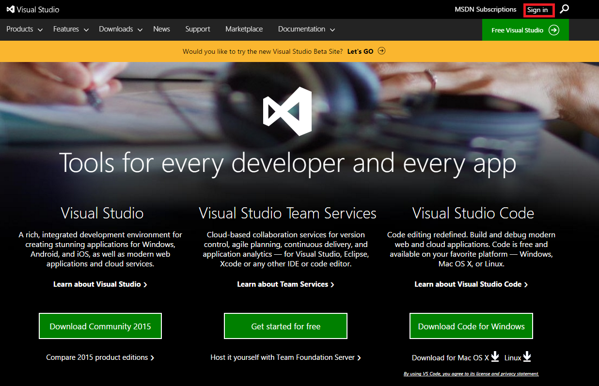
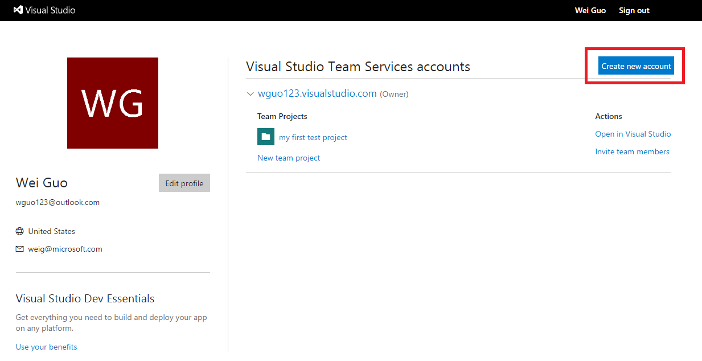
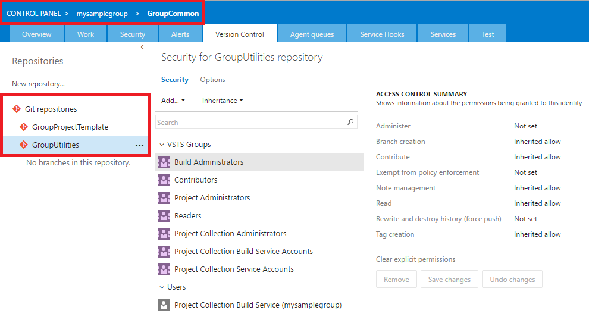
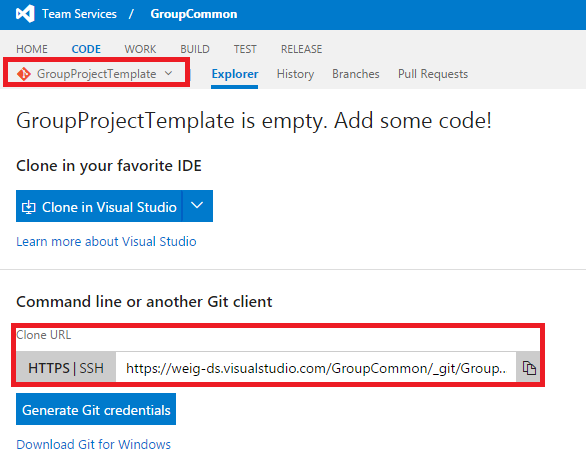
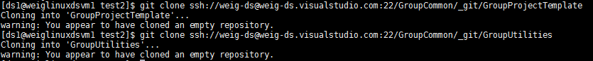

Dictionary of names used in this instruction.
The VSTS server will be the server where all common repositories (e.g., the GroupProjectTemplate and GroupUtilities), all team repositories, and all project repositories will be hosted. The common repositories will be the ones that can be adopted by all teams and data science projects within your group.
-
Sign up VSO server
Go to Visual Studio online, click sign in in the upper right corner.

Sign in with your Microsoft account. If you do not have a Microsoft account, click Sign up now to create a Microsoft account, and then sign in using this account.
If your organization has Visual Studio/MSDN subscription, click the link in the green box to sign in with your work or school account which has been added to this subscription.

After you sign in, click Create New Account in the upper right corner as in the following image.

A window will be popped up asking you to fill in the information of the VSTS server you want to create.
- Fill in your server name. After this server is created, the URL of your server will be https://<servername>.visualstudio.com.
- Make sure that you select Git to manage your code.
- In field **Project name:", input GroupCommon.
- Choose Agile as the value for Organize work using:.
- Choose a geo location to Host your projects in:. In this example, we choose South Central US.

[Azure Note] If you see a popup window like the following after you click Create new account, you need to click Change details to expand the popup window in order to see all fields.

After your VSTS server is created, you will be directed to the VSTS server at https://<servername>.visualstudio.com.

-
Rename the Default Repository of GroupCommon as GroupProjectTemplate (referred as R1 in this instruction)
- On the main page of your VSTS server, click Browse. Then, in the popup window, under the server name (mysamplegroup in this example), select GroupCommon. Click Navigate to go to the page of the team project GroupCommon.


- On the page of the team project GroupCommon, click Collaborate on code. You will be directed to the page of the default Git repository of team project GroupCommon. Currently, this Git repository is still empty.

- On the Git repository page of GroupCommon, click GroupCommon on the top left corner (the red box in the figure below), and select Manage repositories... (the green box in the figure below). You will be directed to the Version Control tab of your team project CONTROL PANEL.

- On the Version Control tab, click the GroupCommon repository on the left panel, and select Rename repository.

- In the popup window, provide a new name GroupProjectTemplate, and click Rename.

-
Create GroupUtilities Repository under VSTS Server (referred as R2 in this instruction)
On the Version Control tab of the CONTROL PANEL of your team project, click New repository..., then select Git as the Type, and provide GroupUtilities as the Name.


Now you can see there are two repositaries: GroupUtilities and GroupProjectTemplate under GroupCommon

In this step, you are going to seed your two repositories GroupProjectTemplate (R1) and GroupUtilities (R2) from the two repositories ProjectTemplate (R01) and Utilities (R02) managed by TDSP team from Microsoft. After this step, your R1 repository will have the same set of directories and document templates as in R01, and your R2 repository will have the set of data science utilities developed by Microsoft TDSP team.
-
Prerequisite:
- Git is installed on your machine. If you are using Data Science Virtual Machine, Git has been pre-installed and you are good to go. Otherwise, please refer to sections Install Git on Windows and Linux machine and Provision Data Science Virtual Machine in Tools.
- If you are using Windows DSVM, you need to have Git Credential Manager (GCM) installed on your machine. On the README.md, scroll down to section Download and Install, and click the latest installer. You will be directed to the latest installer page. Download the .exe installer and run it.
- If you are using Linux DSVM, create SSH public key on your DSVM and add it to your group VSTS server. For details about SSH, please refer to Create SSH public key section in Tools.
-
Clone TDSP ProjectTemplate repository (R01) and TDSP Utilities (R02) from TDSP VSTS server to folders in your local DSVM as D01 and D02
-
Create a directory as the root directory to host all your clones of the repositories. For instance, in Windows DSVM, create a directory C:\GitRepos\DGADSCommon. In Linux DSVM, create a directory GitRepos\DGADSCommon in your home directory.
-
Enter the GitRepos\DGADSCommon directory, and run the following commands, based on the operating system of your DSVM.
Windows DSVM
git clone https://dg-ads.visualstudio.com/DGADSCommon/_git/ProjectTemplate
git clone https://dg-ads.visualstudio.com/DGADSCommon/_git/Utilities

Linux DSVM
git clone ssh://DG-ADS@dg-ads.visualstudio.com:22/DGADSCommon/_git/ProjectTemplate
git clone ssh://DG-ADS@dg-ads.visualstudio.com:22/DGADSCommon/_git/Utilities
- After the clones complete, you should be able to see two directories ProjectTemplate and Utilities under
GitRepos\DGADSCommon directory.
[Azure Notes] Currently TDSP ProjectTemplate (R01) and Utilities (R02) repositories are on the TDSP VSTS server. In order to clone these two repositories, you have to be added to the DGADSCommon team project. In the future, in order to allow public access, these two repositories will be hosted on public GitHub.
-
Clone GroupProjectTemplate repository (R1) and GroupUtilities repository (R2) on local directories (referred as D1 and D2, respectively) under GitRepos\GroupCommon on your DSVM
- Get the URLs of the repositories. Go to your GroupCommon home page (usually with URL https://<VSTS Server Name>.visualstudio.com/GroupCommon). Click CODE. Choose the repository, either GroupProjectTemplate or GroupUtilities, and copy the Clone URL (HTTPS for Windows or SSH for Linux, based on the operating system of the DSVM you are going to clone the repository to).

- In PowerShell script prompt (Windows) or Shell command (Linux), change directory to
GitRepos\GroupCommon, run the following commands to clone R1 and R2 into GitRepos\GroupCommon.
Windows DSVM
git clone <the HTTPS URL of the GroupProjectTemplate repository>
git clone <the HTTPS URL of the GroupUtilities repository>

Linux DSVM
git clone <the SSH URL of the GroupProjectTemplate repository>
git clone <the SSH URL of the GroupUtilities repository>

[Azure Notes] You will receive warning messages that D1 and D2 are empty.
-
Seed your GroupProjectTemplate and GroupUtilities Repositories from the TDSP Repositories (R01 and R02)
Now in your local machine, we need to copy the content of ProjectTemplate and Utilities directories (except the metadata in .git directories) under GitRepos\DGADSCommon to your GroupProjectTemplate and GroupUtilities directories under GitRepos\GroupCommon. Run the following scripts in PowerShell console (Windows) or Shell script console (Linux). The files in GitRepos\DGADSCommon\ProjectTemplate (D01) will be copied to GitRepos\GroupCommon\GroupProjectTemplate (D1), and the files in GitRepos\DGADSCommon\Utilities (D02) will be copied to GitRepos\GroupCommon\Utilities (D2).
You will be prompted to input the paths to D01, D1, D02, and D2. The paths you input will be validated. If you input a directory that does not exist, you will be asked to input again.
Windows DSVM
wget "https://raw.githubusercontent.com/Azure/Azure-MachineLearning-DataScience/master/Misc/TDSP/tdsp_local_copy_win.ps1" -outfile "tdsp_local_copy_win.ps1"
.\tdsp_local_copy_win.ps1 1

Now you can see that files in directories D01 and D02 (except files in the .git directory) are copied to D1 and D2, respectively.

Linux DSVM
wget "https://raw.githubusercontent.com/Azure/Azure-MachineLearning-DataScience/master/Misc/TDSP/tdsp_local_copy_linux.sh"
bash tdsp_local_copy_linux.sh 1

Now you see that the files in the two folders (except files in the .git directory) are copied to GroupProjectTemplate and GroupUtilities respectively.

-
Customize contents in D1 and D2, if needed
If you want to customize the contents in D1 and D2 to meet the specific needs of your group, now it is the time to do so. You can modify the template documents, change the directory structure, or add existing utilities your group has developed and are helpful for your entire group.
-
Add contents in D1 and D2 to R1 and R2 on group server
Now, you need to add the contents in D1 and D2 to repositories R1 and R2. Here are the git bash commands you can run in both Windows PowerShell or Linux.
Enter the directory GitRepos\GroupCommon\GroupProjectTemplate, run the following commands.
git status
git add .
git commit -m"push from win DSVM"
git push

You can see that in your group's VSO server, in the GroupProjectTemplate repository, the files are synced instantly.

Changing directory to GitRepos\GroupCommon\GroupUtilities, run the same set of four commands as above.
[Azure Note] If this is the first time you commit to a Git repository, you will be asked to provide your name and email address. Please use the same name and email address when you commit to these two repositories. Using the same name and email address will provide convenience when later on you build PowerBI dashboard to track your Git activities on multiple repositories.